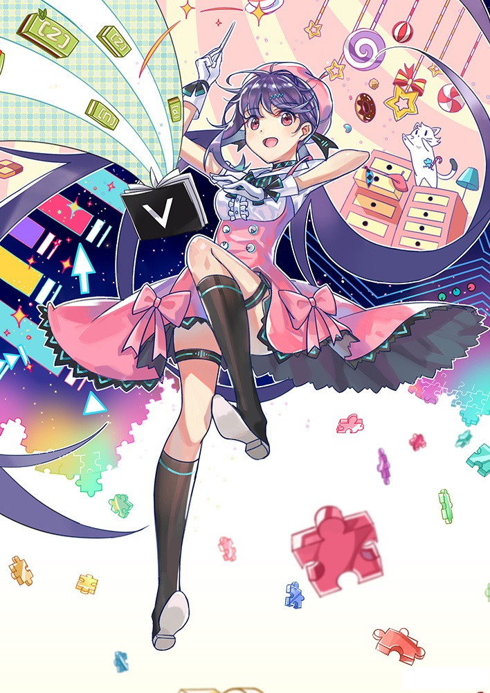
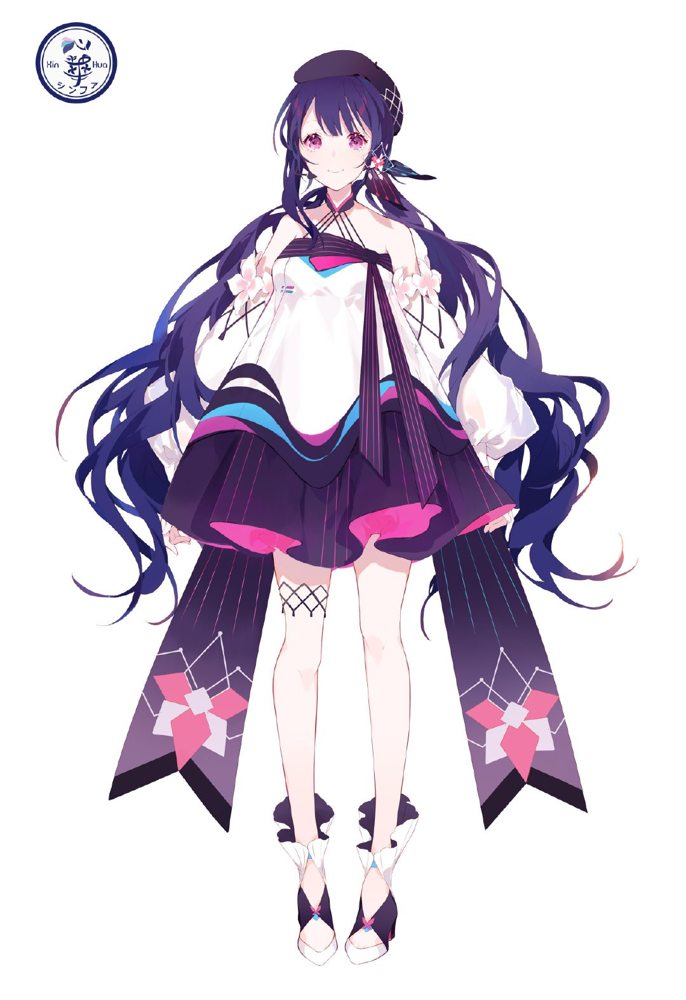

心华（日语：心（シン）華（ファ）；英语：Xin Hua）是GYNOID（中华地区版权：上海望乘信息科技有限公司）
以Yamaha的VOCALOID 3语音合成引擎为基础开发贩售的虚拟女性歌手软件角色制品之一，软件演唱语言为中文
2015年2月10日V3中文声库在台湾正式发售，V4中日文声库分别于2017年9月7日[2]、9月22日正式发售
是第一位升级且发售双语声库的中华地区VOCALOID虚拟歌手软件
基本资料
- 姓名：心华
- 人设：VOFAN
- 年龄：16岁
- 身高：160cm
- 外貌：蓝紫发（中文）／茶金发（日文）、粉紫瞳，波浪单马尾分股，身上几处饰兔耳蝴蝶结。
- 代表色：粉紫色（EE82EE）
- 宠物：小花
- 声源：王文仪
- 中文声库发布日期：2015.02.10（V3）、2017.09.07（V4）
- 日文声库发布日期：2017.09.22（V4）
- 中文声库音色：Original
- 日文声库音色：Original、Natural、Power
- 擅长音域：G#2-E4（Original）、F#2-F4（Natural、Power）
- 擅长节奏：80-200BPM
- 别称：字典娘
形象设计
心华的人设由台湾著名绘师VOFAN进行设计
除官方选定的人设之外，心华还有其他颜色的异色版心华人设，同为VOFAN绘制
V4的新形象由绘师ZARD进行设计，主题为「Puzzle」；日文新形象则使用了VOFAN最初设计中的一款异色版本
2019年4月15日公开2019新形象「花与蝶之海岛」，由绘师深雪进行设计，以花与蝶为主题，将台湾特色的蝴蝶兰、油桐花、天灯、凤蝶等融入了设计构思中
|  |  |